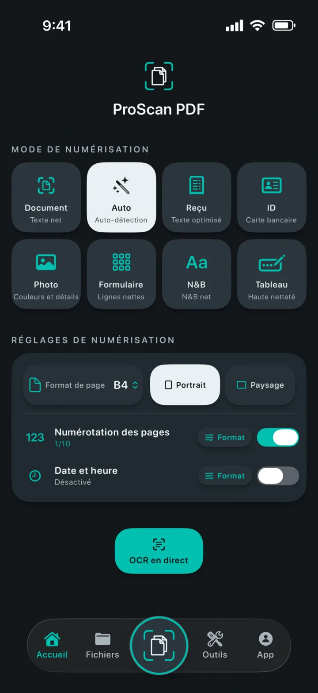
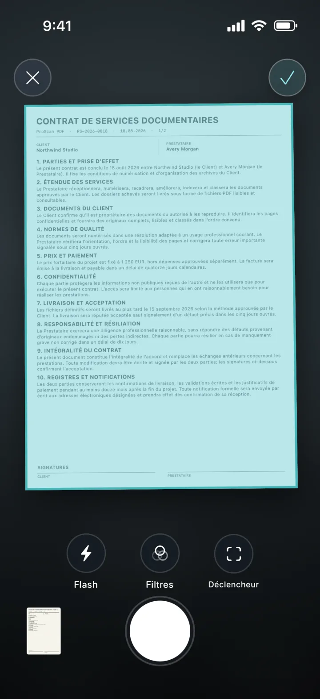
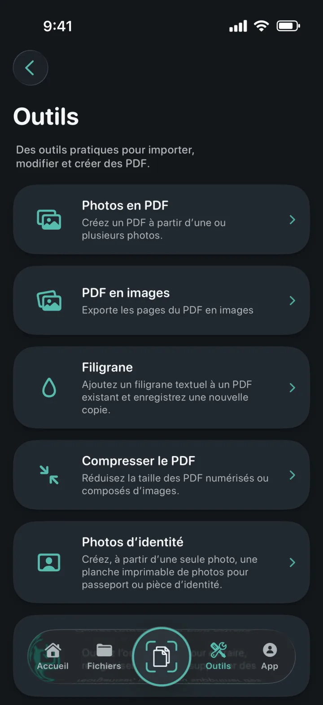
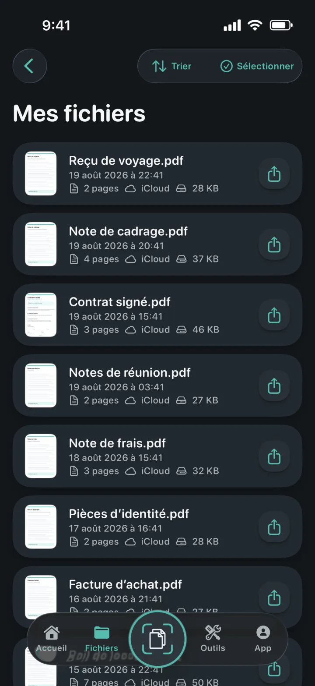
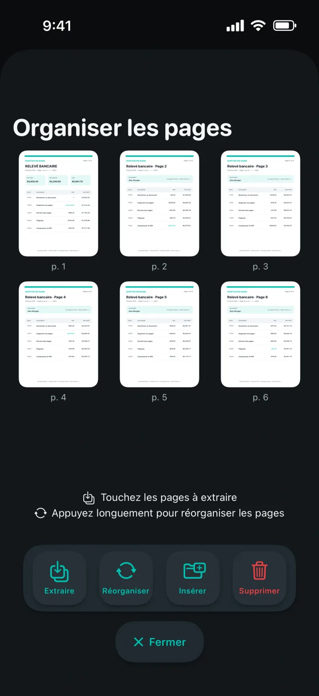
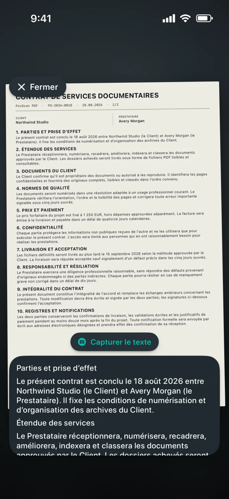

Photos en PDF
Transformez une ou plusieurs photos en un PDF soigné.
Un scanner qui comprend chaque page
Transformez documents, reçus, pièces d’identité, notes et photos en PDF soignés. Modifiez-les, signez-les, protégez-les et partagez-les ensuite, sans publicité ni filigrane.

Un scanner qui comprend chaque page
Choisissez le mode adapté, cadrez la page et laissez le scanner de documents d’Apple effectuer la capture. Réglez le format, l’orientation, la numérotation et l’horodatage avant de commencer.

Tous vos outils PDF au même endroit
Importez, convertissez, modifiez et créez des PDF depuis un espace de travail clair et complet.

Transformez une ou plusieurs photos en un PDF soigné.
Exportez chaque page en image, puis enregistrez-la ou partagez-la.
Ajoutez un filigrane coloré à une nouvelle copie du PDF.
Réduisez la taille des PDF numérisés ou composés d’images.
Recadrez, contrôlez et exportez des formats exacts ou des planches imprimables.
Extrayez, réorganisez, insérez ou supprimez des pages PDF.
Créez des fichiers Word modifiables en préservant au mieux la mise en page.
Créez une copie indexable et retrouvez du texte dans le lecteur.


Des documents toujours organisés
Les copies locales garantissent une ouverture rapide de la bibliothèque. La sauvegarde iCloud privée vous aide à retrouver vos documents sur un autre appareil Apple.
La confidentialité guide notre architecture
La numérisation, l’OCR et le traitement PDF s’effectuent localement sur votre appareil. ProScan PDF n’envoie pas vos documents vers ses propres serveurs.
Lire la politique de confidentialitéOCR et documents indexables
Capturez du texte en direct, extrayez du contenu modifiable ou créez des copies PDF indexables. Tout est traité sur votre iPhone ou iPad.

Pensé pour vous
Chaque thème transforme l’interface de l’app et propose une icône d’écran d’accueil assortie.
Turquoise scanner et blanc papier sur graphite.
Cyan électrique et violet sur noir profond.
Commandes bleues épurées sur une surface claire.
Corail, violet et menthe sur charbon doux.
Champagne et rose poudré sur bleu nuit raffiné.
Argent froid et or poli sur graphite.
Crème chaud et terracotta sur vert forêt profond.
Disponible en anglais, allemand, espagnol, français, italien, néerlandais, polonais, portugais du Brésil, portugais du Portugal, turc, chinois simplifié, japonais, coréen et hindi.
Vos questions, nos réponses
L’essentiel sur la confidentialité, le stockage et tout ce que vous pouvez faire avec ProScan PDF.
Non. ProScan PDF n’affiche aucune publicité et n’ajoute aucun filigrane aux documents numérisés.
Les principales fonctions de numérisation, d’OCR et de traitement PDF s’exécutent sur votre appareil et fonctionnent hors ligne. La sauvegarde iCloud et le partage nécessitent une connexion réseau.
Les documents sont conservés dans la bibliothèque locale de l’app pour rester rapidement accessibles. Si iCloud est disponible, des copies de sauvegarde privées peuvent être enregistrées dans votre compte iCloud.
Photos en PDF, PDF en images, filigranes, compression, photos d’identité, extraction et organisation des pages, PDF en Word, PDF indexables, fusion, signature et protection par mot de passe.
Vous bénéficiez de trois numérisations gratuites chaque jour. Pro débloque la numérisation illimitée et tous les outils Pro.

Votre prochain document est à un geste
Sans publicité. Sans filigrane.